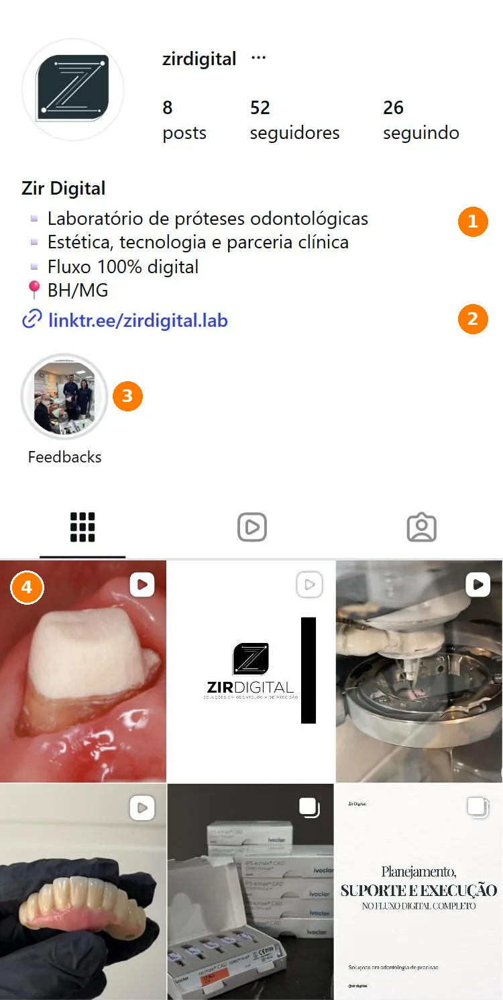
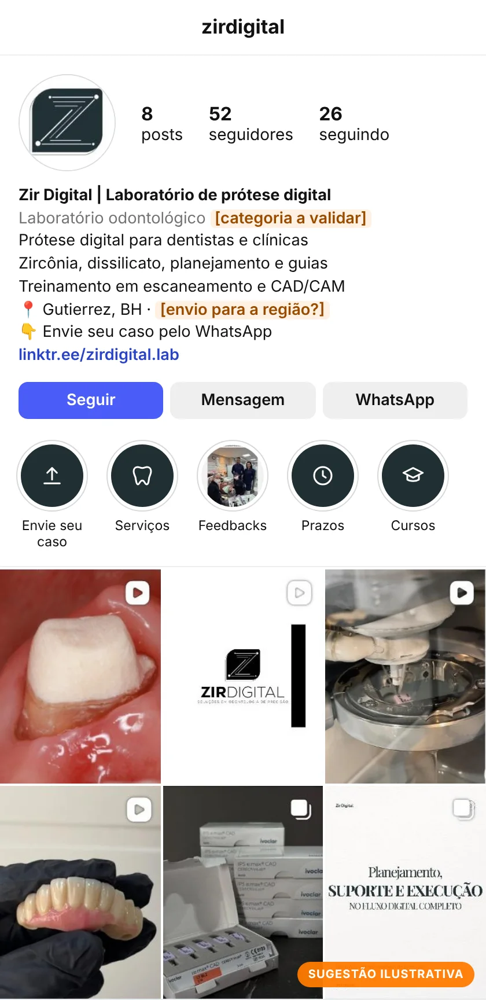
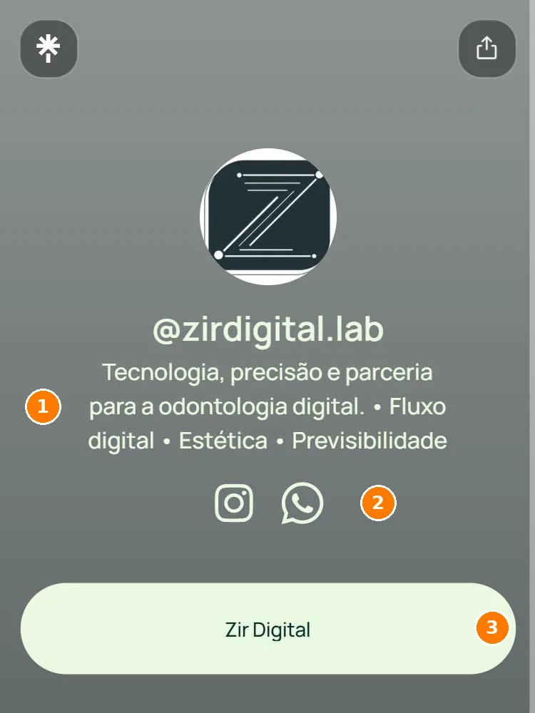
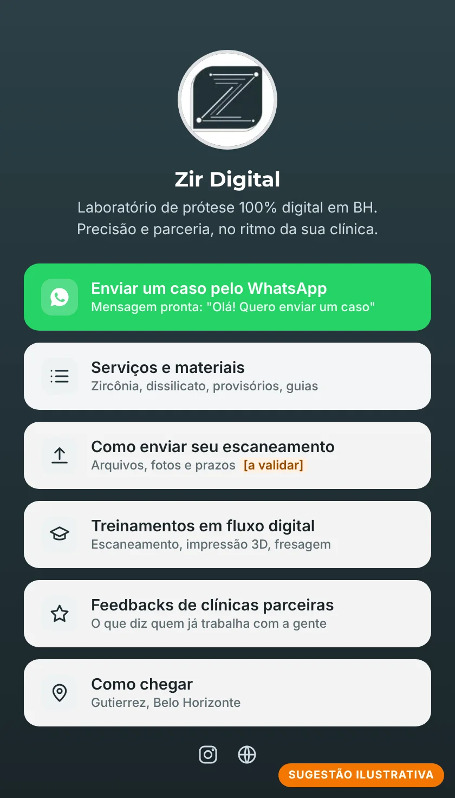
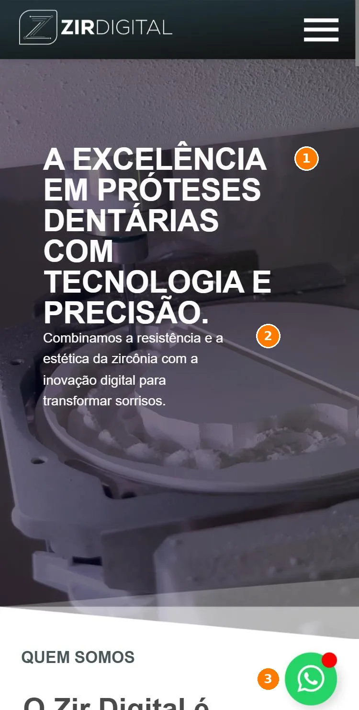
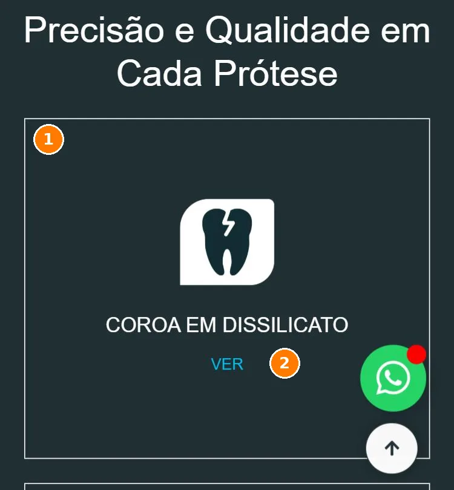
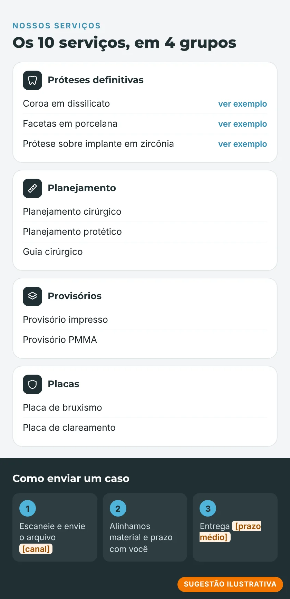
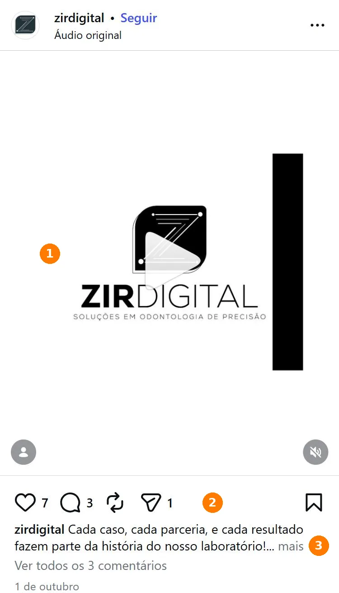
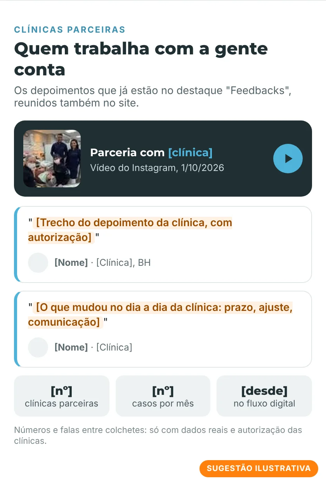

Leitura pública inicial
Olhamos, só por fora, o que a Zir Digital mostra hoje no Instagram, no Linktree e no site zirdigital.com. Esta leitura reconhece o que já funciona e aponta possibilidades de evolução, para considerar conforme os objetivos de vocês.
Usamos o caminho do Método VOS: Ver com clareza, Ordenar o que existe e Sustentar com constância. Este é o recorte da Zir Digital. Em cada etapa, mostramos o que já funciona e uma possibilidade de evolução.
"Laboratório de próteses odontológicas", "Fluxo 100% digital" e "BH/MG" no Instagram; no site, a missão de ser parceiro "no ritmo da sua clínica". Possibilidade: dizer também para quem é (dentistas e clínicas) e qual é o próximo passo.
WhatsApp no Linktree e no site, formulário, endereço, telefone e e-mail no rodapé. Possibilidade: um botão principal "enviar um caso", com mensagem pronta, e um teste rápido no link do WhatsApp do site (evidência 3).
Fresagem, CAD/CAM, chairside, e.max, planejamento e um vídeo com clínica parceira. Possibilidade: um ritmo fixo de publicação, com séries que o dentista reconhece, e a prova das clínicas reunida em um lugar.
Se um caminho já traz conversão, ele não precisa mudar. A Zir Digital já tem marca, oferta clara e canais de contato. Se as clínicas de hoje chegam bem por indicação ou relacionamento, isso é uma base. O que segue são possibilidades, para usar quando fizerem sentido para os objetivos de vocês.
O site fala com três públicos ao mesmo tempo: quem já trabalha no digital e precisa de um laboratório parceiro, quem quer aprender o fluxo (escaneamento, impressão 3D, fresagem e smile design) e quem precisa de planejamento cirúrgico completo. Se esse arranjo já traz as clínicas certas, ele segue. Se o objetivo for crescer, escolher quem vem primeiro muda o que a bio, o link e a primeira tela do site dizem. Por isso, três cenários para conversar.
Laboratório digital como extensão da clínica.
O treinamento como porta de entrada.
Reabilitação, guias e implantes.
Leitura qualitativa, baseada apenas no que é público. O Raio-X completo mede isso com dados internos e entrevista. Ainda não conversamos, então esta é uma leitura de fora: só vocês sabem o que já traz resultado.
Antes de mudar qualquer coisa, vale proteger o que já gera confiança.
Instagram ("Fluxo 100% digital"), Linktree ("Fluxo digital • Estética • Previsibilidade") e site repetem a mesma ideia. Quem chega por qualquer canal entende o diferencial.
O site fala em adaptar o trabalho a material, prazo e tipo de caso, de casos rápidos a planejamento cirúrgico completo. É a linguagem de quem quer ser o laboratório fixo da clínica.
Dez serviços listados, três deles com foto do trabalho, e treinamento para a equipe da clínica. O dentista encontra o que procura pelo nome técnico.
O vídeo de 1/10/2026 traz uma clínica parceira e uma intenção clara: deixar quem trabalha com a Zir contar a experiência. O destaque "Feedbacks" guarda isso no perfil.
O "Z" em grafite e a assinatura "Soluções em odontologia de precisão" aparecem no site, no Instagram e no Linktree, com fotos reais de fresagem, materiais e peças.
Rua, sala, bairro, telefone e e-mail no rodapé do site. Para quem vai confiar um caso a um laboratório, saber onde ele fica faz diferença.
À esquerda, como está hoje (print real, de 25/11/2026). À direita, uma possibilidade ilustrativa na própria identidade da Zir Digital, montada com imagens do perfil de vocês. É um exemplo de caminho, não a arte final, e depende dos objetivos de vocês.
Em quatro linhas, a bio apresenta o laboratório, o fluxo 100% digital e a cidade. A grade mostra processo de verdade: fresagem, peças e materiais.


A página repete a promessa da marca e reúne Instagram, WhatsApp e site. É um caminho curto e coerente com o perfil.


Título grande, foto real de fresagem e um subtítulo que liga a zircônia à inovação digital. Logo abaixo, "Quem somos". O contato fica no botão flutuante do WhatsApp.

Cada serviço tem um cartão com ícone e nome; três deles trazem um link "VER" com a foto do trabalho. No celular, os dez cartões ficam um abaixo do outro.


O vídeo de 1/10/2026 agradece a uma clínica parceira e diz que a ideia é deixar quem trabalha com a Zir contar a experiência. É o tipo de conteúdo que um laboratório mais pode usar.


Consultamos o Instagram, o Linktree, o site e buscas públicas. Registramos também o que não encontramos, porque ausência de prova também é informação, e pode apenas indicar que o conteúdo existe e não foi alcançado.
| Item | O que encontramos | Fonte | Leitura |
|---|---|---|---|
| @zirdigital, "Zir Digital", com 8 posts, 52 seguidores e 26 seguindo. Bio: laboratório de próteses odontológicas, estética, tecnologia e parceria clínica, fluxo 100% digital, BH/MG. | Instagram (25/11/2026) | Ponto forte | |
| Destaques | Um destaque, "Feedbacks", com foto de equipe em clínica. | Instagram (25/11/2026) | Ponto forte |
| Posts recentes | Vídeo de parceria com clínica em 1/10/2026 (7 curtidas, 3 comentários, 1 envio) e vídeo sobre núcleos de fibra em CAD/CAM em 17/11/2026 (7 curtidas, 2 comentários, 5 envios). Amostra pequena; os envios sugerem que o conteúdo técnico circula entre colegas. | Instagram (25/11/2026) | Possibilidade |
| Linktree | linktr.ee/zirdigital.lab: bio da marca, ícones de Instagram e WhatsApp (com 55) e um botão para o site. | Linktree (25/11/2026) | Ponto forte |
| Categoria do Linktree | O título da página aparece como "@zirdigital.lab Agency Marketing, PR, Creative". Esse texto parece vir da categoria escolhida no Linktree, e é o título que aparece em buscas e compartilhamentos. | Linktree (25/11/2026) | Conferir |
| Site | zirdigital.com: título principal, quem somos, missão, 10 serviços, fotos do espaço, formulário, endereço no Gutierrez (BH), telefone, e-mail e botão de WhatsApp. Rodapé com © 2025. | zirdigital.com (25/11/2026) | Ponto forte |
| WhatsApp do site | Link "Iniciar conversa!" para wa.me/31982306330, sem o 55. A página do WhatsApp mostrou "Conversar com 31982306330". | zirdigital.com e WhatsApp (25/11/2026) | Conferir |
| Busca no Google | A página não tem descrição para buscadores (meta description), o título da aba é só "Zir Digital", os títulos da página não usam um título principal (H1) e as 20 imagens não têm texto alternativo. | Código da página inicial (25/11/2026) | Possibilidade |
| Medição do site | Não identificamos ferramenta de análise de visitas no código da página inicial. Pode existir outra forma de medição que não aparece por fora. | Código da página inicial (25/11/2026) | Conferir |
| Nomes e e-mail | @zirdigital no Instagram; zirdigital.lab no Linktree e no e-mail (zirdigital.lab@gmail.com). O domínio zirdigital.com já é de vocês. | Instagram, Linktree e site | Possibilidade |
| Ficha no Google e avaliações | Não localizamos ficha da empresa nem avaliações nas buscas por "Zir Digital" com Belo Horizonte e o endereço. | Buscas públicas (25/11/2026) | Não localizado |
| Reclame Aqui e imprensa | Não localizamos página própria nem menções nas buscas feitas. | Buscas públicas (25/11/2026) | Não localizado |
Se os caminhos de hoje já trazem as clínicas que vocês querem, eles seguem. Se o objetivo for ampliar, com anúncios, Google ou visitas a clínicas, estas três camadas ajudam cada esforço a render.
Um exemplo de sequência, a ajustar depois de conversarmos sobre os objetivos de vocês. O que já funciona entra como base e é preservado.
Esta leitura é um recorte do que o Raio-X mostra por dentro. Se fizer sentido, a gente conversa sobre os objetivos da Zir Digital e sobre o que vale, ou não, mudar.
Quero conversar pelo WhatsApp Sem compromisso · resposta pelo WhatsApp